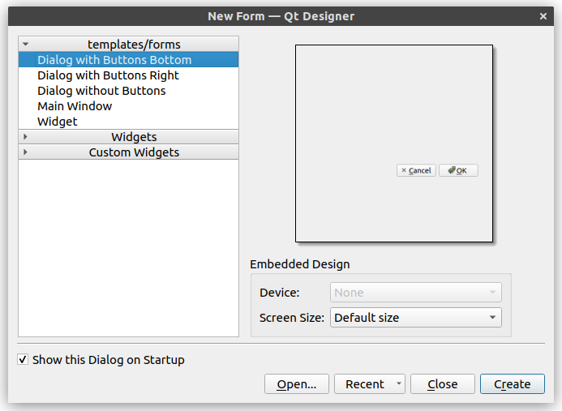
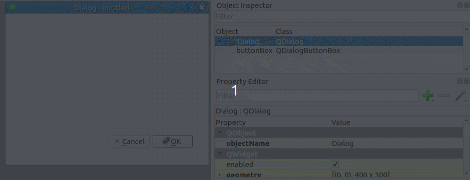

Exercise 6: Buffer tool
The goal of this exercise is to create a simple tool which can be used to select a vector layer and use it to create a new layer in which a buffer is created from the source layer to each new feature. A dialog interface is created for the tool where you can choose a source layer, the distance and segments of the buffer:
Here is a video showing the functionality of the tool:

Exercise 6.1: Creating the GUI
As learned previously you can create GUIs programmatically using PyQt. However, especially creating more complex GUIs by writing code can be difficult. Qt offers a solution in the form of a separate program called Qt Designer where you can design GUIs graphically. You can use it to build your GUI and save it as a .ui file which can be used as a part of the plugin. On Windows Qt Designer is typically included as a part of the QGIS installation and can be opened by searching for its name.
First create a minimal GUI and link it up with the plugin you created in the previous exercise. Open Qt Designer where you should be greeted with the following dialog:

Select Dialog with Buttons Bottom and press Create. Next from the top right “Object Inspector” menu change the name of the QDialog object to BufferToolDialog and edit the buttonBox object so that the OK button is removed. Select the buttonBox object and scroll down in the Property Editor which is located below the Object Inspector. At the bottom you should see the attributes of the QDialogButtonBox class. Here you can open the standardButtons menu to edit the different buttons. Double-click the OK button to exclude it from the GUI.

Save this GUI into the plugin folder that was previously created
with this path: test-plugin/testplugin/resources/ui/buffer_tool.ui.
You should save the file in this exact location, because the
qgis_plugin_tools package will be used later on and can locate
this path easily.
Exercise 6.2: Connecting the GUI to the plugin
Next edit the plugin so that you can open the GUI through QGIS.
Define a new class for the dialog you just created. It should inherit QDialog
- Create two new files in the
test-plugin/testplugin/uidirectory:__init__.pyandbuffer_tool_dialog.py - Leave
__init__.pyas empty. - Copy the following code to
buffer_tool_dialog.py:
import logging
from typing import Optional
from qgis.PyQt.QtWidgets import (
QDialog,
QWidget,
)
from testplugin.qgis_plugin_tools.tools.resources import load_ui, plugin_name
FORM_CLASS: QWidget = load_ui("buffer_tool.ui")
LOGGER = logging.getLogger(plugin_name())
class BufferToolDialog(QDialog, FORM_CLASS):
def __init__(self, parent: Optional[QWidget] = None) -> None:
"""Constructor."""
super().__init__(parent)
self.setupUi(self)Next open the test-plugin/testplugin/plugin.py file. Add to the import commands:
from testplugin.ui.buffer_tool_dialog import BufferToolDialogThe next import command should already exist, but add tr to the end of it.
from testplugin.qgis_plugin_tools.tools.i18n import setup_translation, tr # add 'tr'tr() is a function that translates string depending on the language that is
selected. If you want to translate your plugin for different localities you
should use the function for every string that is visible to the user one way
or another.
Next find the initGui() function inside the Plugin class. Edit the self.add_cation function call:
self.add_action(
"",
text=tr("Buffer Tool"),
callback=self.open_buffer_tool,
parent=iface.mainWindow(),
add_to_toolbar=False,
)Here you are defining QAction widgets which will be added to the QGIS plugin menu. In the plugin template a menu is added to the QGIS Plugins top menu. Here you define the buttons which are added to a secondary menu which is named after the plugin.

In order the meaning of the arguments:
- Path to an icon file. If empty the button will have no icon.
- The text of the button.
- Callback, i.e. the function that will be called when the button is clicked.
- Parent. Add to the QGIS main window
- Should a button be added also to a toolbar? In this case no.
Then you can define the open_buffer_tool() function which was
referred to previously. Find the run() method at the end of
the Plugin class definition, delete it and copy this new
function over:
def open_buffer_tool(self) -> None:
"""Opens buffer tool dialog"""
BufferToolDialog().exec()Remember to run this on the commandline:
python build.py deployReload the plugin with Plugin Reloader. Now inside the Plugins > Test Plugin menu there should be a new button Buffer Tool and by clicking it the GUI you saved earlier should open.
Exercise 6.3: The functionality of the tool
Next add the needed widgets to the GUI. On the left you have a list of widgets that can be added used.
You can follow the following step:
- Drag a Horizontal Layout to the dialog. You can make it a bit larger.
- Drag a Label widget into the layout.
- Drag a QgsMapLayerComboBox also into the layout, to the right of the label.

- Double-click the label widget and write Layer as its text.
- Change the name of the QgsMapLayerComboBox object to
layerComboBox. - If you prefer you can also rename the QLabel object.
Repeat the previous steps so that finally you have the following components alongside a label for them as needed:
- Layer: QgsMapLayerComboBox (name: layerComboBox)
- Buffer Distance: QgsDoubleSpinBox (name: distanceSpinBox)
- New layer name: QLineEdit (name: newLayerLineEdit)
- QPushButton (name: newLayerPushButton, button text: Create new layer)
Organize the widgets vertically and finally you can create a layout for the BufferToolDialog itself by right-clicking on the background:

Once these changes have been made you can write the actual functionality
of the tool step by step. Organize the code of the plugin so that the
functionality of the GUI is defined in Python files under the
test-plugin/testplugin/ui folder. The actual buffer functionality
is defined in test-plugin/testplugin/core.
- Create the core folder and add an empty
__init__.pyfile. - To the same folder add a new file
buffertool.pyand add the following code:
from qgis.core import (
QgsVectorLayer,
)
class BufferTool:
@staticmethod
def create_buffer_layer(src_layer: QgsVectorLayer, buffer_distance: float, new_layer_name: str, segments: int) -> Optional[QgsVectorLayer]:
print("Creating buffer layer")So far the create_buffer_layer() only prints a message, the actual
functionality will be added later. A Python decorator @staticmethod
is used, which means the function can be called without creating an
object of the BufferTool class.
Edit the test-plugin/testplugin/ui/buffer_tool_dialog.py file:
Add to the import commands:
from testplugin.core.buffertool import BufferTool
from qgis.core import QgsMapLayerProxyModelAdd to the class constructor (__init__() method):
self.layerComboBox.setFilters(
QgsMapLayerProxyModel.PointLayer |
QgsMapLayerProxyModel.PolygonLayer |
QgsMapLayerProxyModel.LineLayer
)
self.newLayerPushButton.clicked.connect(self._create_buffer_layer)Here a filter is applied to the layerComboBox object which means only
point, line and polygon layers are shown. A connection is created from the
push buttons clicked signal to the _create_buffer_layer method that
will be defined next.
Add a new method:
@log_if_fails
def _create_buffer_layer(self) -> None:
selected_layer = self.layerComboBox.currentLayer()
buffer_distance = self.distanceSpinBox.value()
new_layer_name = self.newLayerLineEdit.text()
segments = 5 # this'll be returned to later
new_layer = BufferTool.create_buffer_layer(
selected_layer,
buffer_distance,
new_layer_name,
segments
)
if new_layer is not None:
QgsProject.instance().addMapLayer(new_layer)Here the required information is fetched from the widgets and the
create_buffer_layer method is called from the BufferTool
class.
Organizing the code to different classes into the separate ui and core folders may seem unnecessarily complex for a fairly simple plugin. However keeping the GUI and core functionalities separate has its own benefits, for example later when writing tests.
Confirm that the tool works as expected. Remember to deploy the changes:
python build.py deployReload the plugin inside QGIS using Plugin Reloader. Now when you open the dialog and press the Create new layer button a message should appear inside the Python console.
Now you can create the actual functionality for the buffer tool.
Edit the test-plugin/testplugin/core/buffertool.py file:
from typing import Optional
from testplugin.qgis_plugin_tools.tools.i18n import tr
from testplugin.core.exceptions import BufferToolException
from qgis.core import (
QgsFeature,
QgsProject,
QgsVectorLayer,
QgsWkbTypes,
)
from testplugin.qgis_plugin_tools.tools.custom_logging import bar_msg
class BufferTool:
@staticmethod
def create_buffer_layer(src_layer: QgsVectorLayer, buffer_distance: float, new_layer_name: str, segments: int) -> Optional[QgsVectorLayer]:
if src_layer.featureCount() == 0:
raise BufferToolException(
tr("Buffer Tool"),
bar_msg=bar_msg(tr("Could not create buffer layer. Source layer has no features"))
)
src_geom_type = QgsWkbTypes.displayString(src_layer.wkbType()).lower()
new_geom_type = 'MultiPolygon' if 'multi' in src_geom_type else 'Polygon'
crs = src_layer.crs().authid()
geom_string = f"{new_geom_type}?crs={crs}"
buffer_layer = QgsVectorLayer(geom_string, new_layer_name, "memory")
buffer_layer.startEditing()
src_fields = src_layer.fields()
for field in src_fields:
buffer_layer.addAttribute(field)
for feature in src_layer.getFeatures():
old_geom = feature.geometry()
new_geom = old_geom.buffer(buffer_distance, segments)
new_feature = QgsFeature(feature)
new_feature.setGeometry(new_geom)
buffer_layer.addFeature(new_feature)
buffer_layer.updateFields()
buffer_layer.commitChanges()
return buffer_layerAn exception called BufferToolException is used. This hasn’t been
defined yet so do that next. Create a new file test-plugin/testplugin/core/exceptions.py
and add the following code:
from testplugin.qgis_plugin_tools.tools.exceptions import QgsPluginException
class BufferToolException(QgsPluginException):
passExercise 6.4: Segments
When a buffer is created from a geometry one parameter is segments
which affects how many new vertexes the buffer geometry gets.
Based on what you’ve learned add an option to the tool dialog to change the number of the segments in the GUI and edit the code so that the number defined in the GUI will be used.
You can use the QgsSpinBox widget.
Unit tests
In programming it is important to write tests and QGIS plugins are not an exception. You can use the pytest package to create and run tests.
To write tests you create new files in the test-plugin/tests
folder. These files are .py files and their name has to begin with
test_. In these files we can then create the tests themselves. Each test
is a function that uses our plugin’s classes and functions, and checks
if the results are as expected. Assuming you’re in the test-plugin
folder, the tests can be executed from the command line by running the
pytest command. However you can also run tests inside VS Code like
done in a previous exercise.
You can also define fixtures which are funtions that return a value
or an object. Using these you can for example define a QGIS layer which
can then be used in more than one test. The fixtures are defined in the
test-plugin/tests/conftest.py file.
There is a common programming practice called test-driven development where you define a test first and implement the actual feature after that. In this course we write the functionalities first and tests later. This is more of an educational choice, we think it’s clearer for the participants to see the plugin in action first instead of writing tests first, which might seem abstract for some participants. In actual development we’d recommend a test-driven approach.
Exercise 6.5: Tests
First you can define some fixtures for the tests. Open the
test-plugin/tests/conftest.py file and add the
following fixtures:
import pytest
from qgis.core import (
QgsFeature,
QgsField,
QgsFields,
QgsGeometry,
QgsPointXY,
QgsVectorLayer,
)
from qgis.PyQt.QtCore import QVariant
from testplugin.ui.buffer_tool_dialog import BufferToolDialog
@pytest.fixture
def dialog():
return BufferToolDialog(None)
@pytest.fixture
def point() -> QgsGeometry:
return QgsGeometry.fromPointXY(QgsPointXY(0.0, 0.0))
@pytest.fixture
def line() -> QgsGeometry:
return QgsGeometry.fromPolylineXY(
[
QgsPointXY(0.0, 0.0),
QgsPointXY(1.0, 0.0),
]
)
@pytest.fixture
def square() -> QgsGeometry:
return QgsGeometry.fromPolygonXY(
[
[
QgsPointXY(0.0, 0.0),
QgsPointXY(1.0, 0.0),
QgsPointXY(1.0, 1.0),
QgsPointXY(0.0, 1.0),
]
]
)
@pytest.fixture
def fields() -> QgsFields:
fields = QgsFields()
fields.append(QgsField("fid", QVariant.Int))
return fields
@pytest.fixture
def point_feature(fields, point) -> QgsFeature:
feature = QgsFeature(fields)
feature.setGeometry(point)
feature.setAttribute("fid", 1)
return feature
@pytest.fixture
def square_feature(fields, square) -> QgsFeature:
feature = QgsFeature(fields)
feature.setGeometry(square)
feature.setAttribute("fid", 1)
return feature
@pytest.fixture
def line_feature(fields, line) -> QgsFeature:
feature = QgsFeature(fields)
feature.setGeometry(line)
feature.setAttribute("fid", 1)
return feature
@pytest.fixture
def point_layer(fields, point_feature) -> QgsVectorLayer:
layer = QgsVectorLayer("Point?crs=epsg:4326&index=yes", "test_points", "memory")
provider = layer.dataProvider()
provider.addAttributes(fields)
layer.updateFields()
provider.addFeature(point_feature)
layer.updateExtents()
return layer
@pytest.fixture
def square_layer(fields, square_feature) -> QgsVectorLayer:
layer = QgsVectorLayer("Polygon?crs=epsg:4326&index=yes", "test_polygon", "memory")
provider = layer.dataProvider()
provider.addAttributes(fields)
layer.updateFields()
provider.addFeature(square_feature)
layer.updateExtents()
return layer
@pytest.fixture
def line_layer(fields, line_feature) -> QgsVectorLayer:
layer = QgsVectorLayer("LineString?crs=epsg:4326&index=yes", "test_line", "memory")
provider = layer.dataProvider()
provider.addAttributes(fields)
layer.updateFields()
provider.addFeature(line_feature)
layer.updateExtents()
return layerExercise 6.5.1: GUI test
Write a simple test for the plugin dialog. Create a new file
test-plugin/tests/test_buffer_tool_dialog.py:
from qgis.PyQt.QtWidgets import QDialog, QDialogButtonBox
def test_dialog_close(dialog):
"""Test we can close the dialog."""
button = dialog.buttonBox.button(QDialogButtonBox.Close)
button.click()
result = dialog.result()
assert result == QDialog.RejectedAt the end of the test we assert that an expression
result == QDialog.Rejected is True. If it is not,
then the test fails.
Exercise 6.5.2: BufferTool test
Next define a test for the actual BufferTool class.
Create a new file test-plugin/tests/test_buffer_tool.py:
from qgis.core import QgsWkbTypes
from testplugin.core.buffertool import BufferTool
def test_create_buffer_layer_polygon(square_layer):
buffer_distance = 1.0
new_layer_name = "Test buffer layer"
segments = 1
buffer_layer = BufferTool.create_buffer_layer(
square_layer,
buffer_distance,
new_layer_name,
segments,
)
buffered_feature = buffer_layer.getFeature(1)
expected_geometry = "Polygon ((-1 0, -1 1, 0 2, 1 2, 2 1, 2 0, 1 -1, 0 -1, -1 0))"
assert buffered_feature.geometry().asWkt(2) == expected_geometry
assert buffer_layer.featureCount() == 1
assert buffer_layer.crs().authid() == "EPSG:4326"
assert buffer_layer.wkbType() == QgsWkbTypes.PolygonNote that a fixture is given as an argument in the test function. Pytest handles passing the arguments to the test function automatically.
In the test we create variables with which the BufferTool method is called. When writing tests involving geometries the WKT format works well since you can’t see the geometries visually.
An expected buffered geometry is defined and then asserted for. It is also tested that the function doesn’t add extra features or change the CRS or geometry type.
Exercise 6.5.3: More tests
Based on what you’ve learned write two more tests for the BufferTool, testing the functionality for a point and a line layer.
Sample plugin
If needed you can inspect the code of a sample plugin containing the same functionalities from the following links:
test-plugin/testplugin/plugin.py
test-plugin/testplugin/ui/buffer_tool_dialog.py
test-plugin/testplugin/core/buffertool.py
test-plugin/testplugin/core/exceptions.py
test-plugin/tests/conftest.py
test-plugin/tests/test_buffer_tool_dialog.py
test-plugin/tests/test_buffer_tool.py
test-plugin/testplugin/resources/ui/buffer_tool.ui
The name of the sample plugin package is sampleplugin.
This has to be changed in every import command that
references the package.